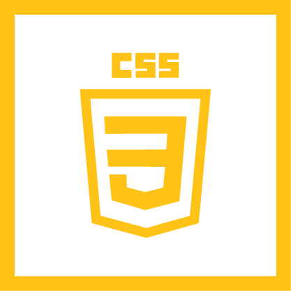

|  |
Government Executive's Leadership Voices. A better internal UX.

Overview
Government Executive, a government facing magazine, sells promotional packages to marketers to showcase their thought leadership in the government space in the hopes of winning government agencies’ contracts. Leadership Voices can be a video or article page centered around a subject matter expert (SME) from their company.
Mission
Due to limited content management system (CMS) capabilities, Leadership Voices was built between two third-party providers, Shorthand and Wordpress. During a downscaling initiative, Leadership Voices’ production process was under review production process was under review for the time and specialty it took, along with the associated cost. In short, Government Executive needed a simpler, cheaper way to scale this product.
UX Research
Interface Design
Photography
Video Production
Vision
At the time, only someone with coding knowledge could work to ‘publish’ a Leadership Voices article. As demand for this product grew, stakeholders wanted a solution that could be scaled to all members of the team – people like copy editors and directors. This way, the product ownership was spread across the whole team and the fear of losing a key members’ knowledge was minimized.
Strategy
Government Executive needed a free or near-free solution that offered the same capabilities as Shorthand and Wordpress. It had to look as if it was part of the CMS, allow for dynamic pages, work in a drag-and-drop environment, and not require coding knowledge. Being the person with the most familiarity, I took the initiative to do the research, come up with a solution, and garner stakeholder buy-in.
Old Process of Publishing Leadership Voices
Add to lander using Elementor
↑
Develop page in Shorthand
↓
Link GovExec site to WordPress lander
↑
Download raw code and fix all broken links
→
Upload code to internal CMS
New Process of Publishing Leadership Voices
Add to lander using Elementor
↓
Link GovExec site to WordPress lander
Roadmap and Execution
User Flows
Previously, if a user wanted to create an article Leadership Voices page, they would build the design of the page in Shorthand. Once it was approved by the client, the user zipped and downloaded the files as hard code and uploaded them into our CMS. Finally, they would add a tile to the WordPress landing page (built using Elementor) to indicate the page was “live.” In the new flow, they would build the article page using Elementor in Wordpress. Once it was approved by the client, they could simply add the tile to the Wordpress landing page.
Competitive Analysis
Wordpress is capable of becoming a ‘plug and play no code’ environment with the help of a plug-in called Elementor. This meant the article pages, video pages, and landing page could all be built in one platform and look as if they were all part of the same website as the CMS. After comparing features and costs, it became clear Elementor was the superior option.
Getting Stakeholder Buy-In
I presented my competitive analysis to stakeholders, along with templates I had set up in Elementor. I made the process as simple as possible, and addressed any concerns that they presented, such as who was going to manage the platform? How do we troubleshoot if something goes wrong? Luckily, Wordpress is such a widely used platform there are many communities to support troubleshooting. Additionally, I had worked with IT to maintain the Wordpress and could continue to work with them if something went wrong. I volunteered to take ownership of the platform so that any updates, access requests, and trainings would go through me.